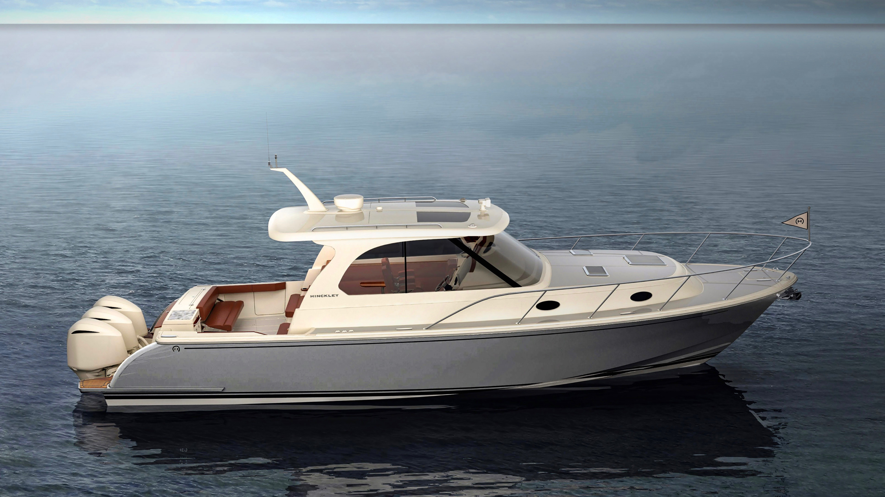

Boat Pronouns

"She's a beauty isn't she?" No "she" is a boat, a thing, made of metal, plastic, and timber. Nothing like any woman I've ever met. The concept of giving feminine pronouns to boats is barbaric and indicitive of what is wrong with today's society. You may yourself have puzzled about this, and pondered where exactly this comes from.
Well friends, as usual, this concept is borne from the liberal media. Who, in their hubris, are attempting to feminize the general population. However this is not something that can be sprung upon society, oh no. If you immediantly start referring to men as 'she' or 'her' you are met with great restraint. Therefore they have decided to ease us all into the process by encouraging us to pretend that these large sea-faring vessels are, and have been for some time, of the female persuastion.